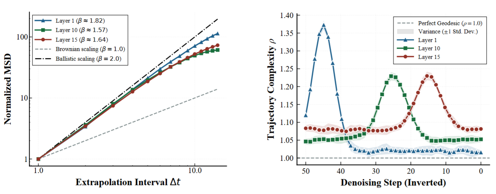
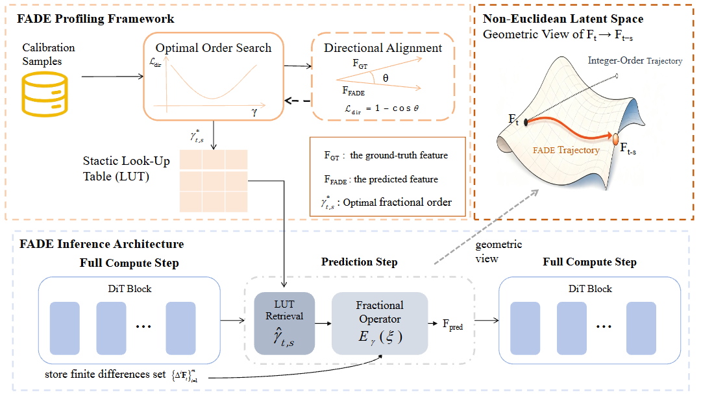
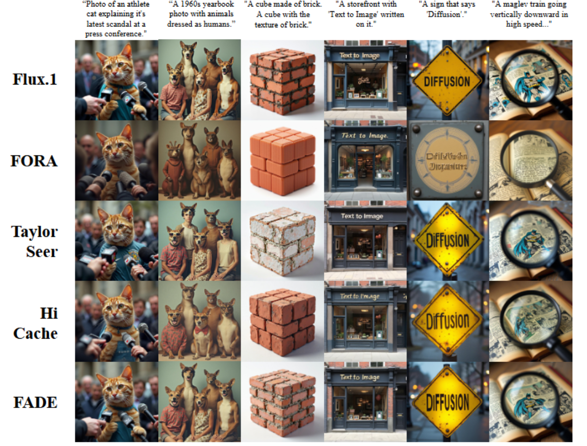

Observe
Characterize how feature trajectories vary across denoising stages and network locations.
A fractional perspective on feature forecasting for faster, high-fidelity diffusion transformer inference.
Sichuan University ✉ Corresponding author: Yao Zhou
01 / Overview
Diffusion transformers produce high-quality images and video, but their iterative sampling requires many expensive forward passes. Feature caching can skip some of that work; the challenge is predicting how intermediate features change between computed steps.
Diffusion Transformers (DiTs) have established themselves as the preeminent paradigm for high-fidelity generative modeling across various modalities, yet their practical deployment is hindered by the severe computational overhead of iterative sampling. While recent feature-caching methods mitigate this latency through feature reuse or forecasting based on integer-order operators, they remain limited in adapting to the non-stationary and highly curved dynamics of DiT latent trajectories. We reveal that DiT feature evolution exhibits anomalous diffusion characteristics and spatiotemporal heterogeneity. FADE models this evolution with a Mittag–Leffler fractional operator and uses an offline-profiled, multidimensional look-up table for adaptive parameter retrieval during inference. Evaluations across DiT-XL/2, FLUX.1 and HunyuanVideo show strong acceleration while preserving generation fidelity, including at aggressive skip intervals.
02 / Key Observation
Integer-order forecasting assumes locally smooth, Euclidean feature evolution. Prior studies have questioned this geometric assumption for deep generative latents and suggested fractal phase-transition structures, motivating us to test for anomalous diffusion. In Figure 1(a), DiT latent displacement deviates from Brownian linear scaling. Figure 1(b) shows that trajectory complexity varies across denoising steps and network layers but is relatively consistent across samples. These observations motivate fractional, stage-aware forecasting with offline calibration.

static/images/dynamics.png03 / Method
FADE combines a Mittag–Leffler fractional operator with a stage-aware look-up table. Offline profiling finds suitable parameters; online inference retrieves them in constant time.

static/images/method.pngCharacterize how feature trajectories vary across denoising stages and network locations.
Calibrate fractional parameters offline and store them in a multidimensional look-up table.
Retrieve the right parameters and predict intermediate features during sampling.
04 / FLUX.1 Results
Qualitative FLUX.1-dev results from the paper, comparing the original model with FORA, TaylorSeer, HiCache, and FADE across six prompts.

05 / Citation
@inproceedings{yang2026fade,
title={FADE: Fractional Anomalous Dynamics Extrapolation for Training-Free Diffusion Transformers Acceleration},
author={Yang, Jinlong and Wu, Jinke and {Lizilin} and Zhou, Yao},
booktitle={Advances in Neural Information Processing Systems},
year={2026}
}